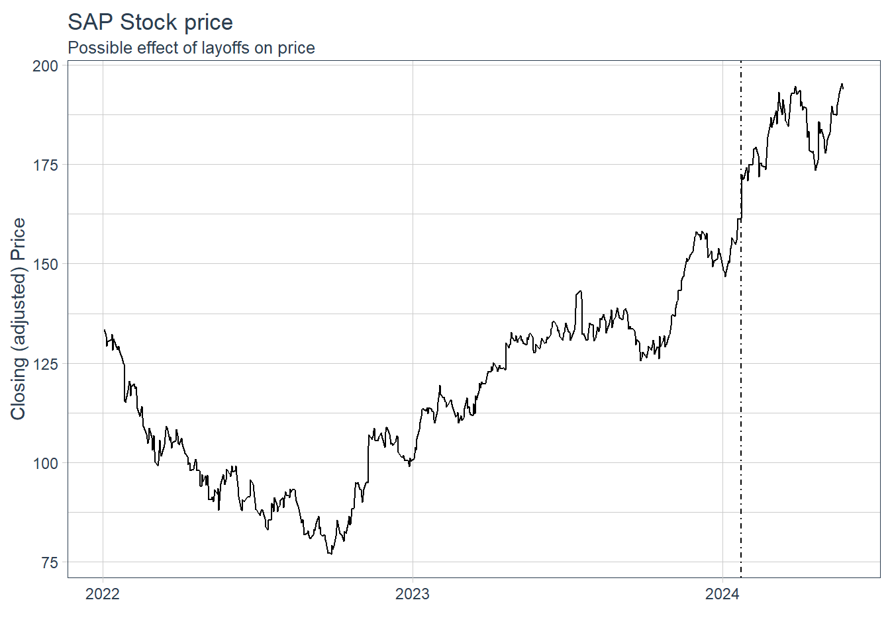
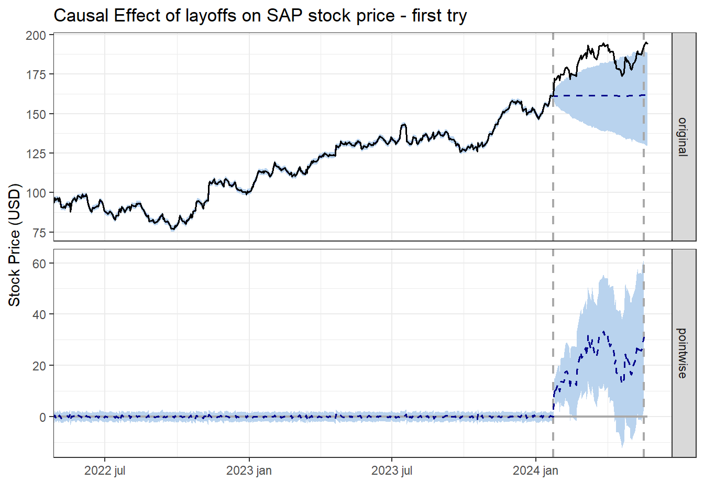
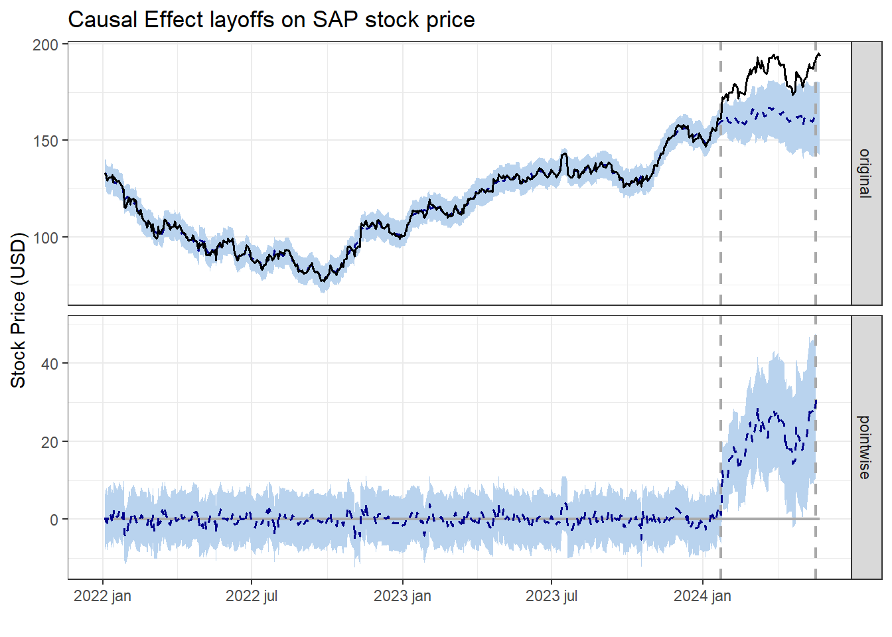

Code
sap_stock = c("SAP") %>%
tq_get(get = "stock.prices", from = "2022-01-01", to = "2024-05-23")Rafael Belokurows
May 24, 2024
Hello, there.
This week I’m sharing a few new methods I’ve tried recently to connect two fields I’m very interested in: Finance and Causal Inference.
SAP is a huge world-class all-powerful software company, and even world-class all-powerful companies go through rough patches and reestructuring, as it has happened with SAP over the past few years. Part of this process included a major layoff of 6.000 people in January 2024.
The market responded quite positively, with their stock price on the NY Stock Exchange going up a few percent over the following weeks (and it hasn’t gone down since). Was the layoff causally related with the uptick in stock price? Or was it just a coincidence?
In this post I’m gonna show how I used Causal Inference estimation methods to identify and measure the impact of this particular layoff on their stock price.
If you are somewhat surprised that a big event of layoff would have such a positive impact on a company’s value, there are some good resources online on why this happens, and fundamentally, it boils down to the optics, i.e. the perception that investors and the market overall have on the company, and how “reestructuring” shows promise of improvement in the company’s situation. 12
Data and code are available at the github repository: https://github.com/rafabelokurows/layoffs_stock_price
First, I obtained daily trading data for SAP stocks on the New York Stock Exchange, symbol named SAP SE. Here, I used tidyquant, a great package for R programming language that has several reliable functions to streamline download and analysis of Financial data.
Here’s the corresponding dataset, with data as of May 23rd 2024.
sap_stock = c("SAP") %>%
tq_get(get = "stock.prices", from = "2022-01-01", to = "2024-05-23")While there are some possible spots where we could analyze ups or downs, we are concerned with the particular movement on Jan 23rd and after, as highlighted in the plot below.

Next, I’ve applied a Causal Effect estimation method to measure and quantify the Causal Effect of this intervention, i.e. the layoff, or to be more precise the day where the decision to layoff became public - 23rd Jan 24, on the response variable, the SAP stock prices after the date of intervention.
For that, I’ve used CausalImpact, package developed by the good folks at Google, for causal inference using Bayesian structural time-series models.
Given a response time series stock prices and a set of control time series, the package constructs a Bayesian structural time-series model. This model is then used to try and predict the counterfactual, i.e., how the response metric would have evolved after the intervention if the intervention had never occurred.
sap_stock_data = sap_stock %>%
select(date,adjusted)%>%
rename(y=adjusted)
tail(sap_stock_data) %>% gt()| date | y |
|---|---|
| 2024-05-15 | 190.055 |
| 2024-05-16 | 190.670 |
| 2024-05-17 | 192.800 |
| 2024-05-20 | 195.300 |
| 2024-05-21 | 194.720 |
| 2024-05-22 | 193.910 |
After transforming the data and setting the dates for the pre-intervention and post-intervention period, we run CausalImpact’s method for estimation.
impact <- CausalImpact(sap_stock_data, pre.period, post.period)
plot(impact, c("original", "pointwise")) +
labs(title = "Causal Effect of layoffs on SAP stock price - first try",y="Stock Price (USD)")+
coord_cartesian(xlim = c(as.Date("2022-06-01"),
as.Date("2024-05-17"))) +
scale_x_date(labels = scales::label_date(format = "%Y %b")) +
theme_bw(base_family = "Bricolage Grotesque")
And we can already see some promising results, with only the own stock time series to feed into the Causal Impact estimation. Some things to unpack here:
The first gray vertical line shows the date of intervention (layoffs).
The horizontal blue dashed line on top is the counterfactual, i.e. what the stock price would be IF the layoffs hadn’t happened, according to our estimation.
The squiggly blue dashed line below means the daily difference between the actual stock price in the real world x our counterfactual estimation, and the amount ranges from close to 0 to almost 40USD depending on the day.
impact Posterior inference {CausalImpact}
Average Cumulative
Actual 183 14841
Prediction (s.d.) 161 (8.6) 13072 (695.3)
95% CI [144, 178] [11669, 14425]
Absolute effect (s.d.) 22 (8.6) 1768 (695.3)
95% CI [5.1, 39] [416.1, 3172]
Relative effect (s.d.) 14% (6.1%) 14% (6.1%)
95% CI [2.9%, 27%] [2.9%, 27%]
Posterior tail-area probability p: 0.00642
Posterior prob. of a causal effect: 99.3576%
For more details, type: summary(impact, "report")You can also easily get the coefficients and Average Treatment Effect (or in this case, Average effect of the layoffs) of this estimation, and while the posterior probability of a causal effect looks great (+99%), I’m not loving the wide confidence interval for the effect (~3% to 27%), I think we could do better than that with some more data.
Looking to improve the results, one option is to add covariates to the causal estimation. Good covariates should mainly:
Direct competitor stocks wouldn’t work here, because they could probably be positively affected when SAP’s stock price goes down or go down when SAP value is on the rise.
With that in mind, I’ve obtained stock prices for several other of companies in the software sector to find out which could make for good covariates to help improve the confidence in our results. And here they didn’t have to be software or IT companies, I just felt like it was easier going for some companies in the same sector. Don’t worry, we’ll exclude direct competitors if they come up as the top correlated stocks after these.
url = "https://stockanalysis.com/stocks/industry/software-application/"
page = read_html(url)
software_stocks = page %>% html_elements(".symbol-table") %>% html_table() %>% .[[1]]
software_stocks %>% head %>% gt()| No. | Symbol | Company Name | Market Cap | % Change | Volume | Revenue |
|---|---|---|---|---|---|---|
| 1 | CRM | Salesforce, Inc. | 264.46B | -2.25% | 8,059,238 | 34.86B |
| 2 | SAP | SAP SE | 228.05B | 0.18% | 648,669 | 34.52B |
| 3 | INTU | Intuit Inc. | 169.94B | -8.35% | 4,187,180 | 15.81B |
| 4 | NOW | ServiceNow, Inc. | 151.39B | -2.59% | 1,341,199 | 9.48B |
| 5 | UBER | Uber Technologies, Inc. | 134.27B | 1.04% | 10,337,236 | 38.59B |
| 6 | CDNS | Cadence Design Systems, Inc. | 80.08B | -0.14% | 939,947 | 4.08B |
NOTE_1: As they are ordered by Market Cap (Value), we see Salesforce and SAP at the top, but there are more than 100 companies in the list, so we’re gonna stick with the first 100 for brevity :)
NOTE_2: Here is the list of software-related stocks we’ve obtained as of May 25th, 2024, just in case.
Now, we use tidyquant again to obtain data for all 100 stocks. You can access this particular dataset here.
And then, we run a matching method available in package MarketMatching (which you can install with devtools::install_github("https://github.com/klarsen1/MarketMatching")
mm <- MarketMatching::best_matches(data=all_stock_data,
id="symbol",
markets_to_be_matched = c("SAP"),
date_variable="date",
matching_variable="adjusted",
parallel=F,
start_match_period="2022-01-03",
end_match_period="2024-01-23",
matches = 10
)
mm$BestMatches %>%
filter(symbol == "SAP") %>%
select(BestControl,rank,RelativeDistance,Correlation,Correlation_of_logs) %>%
left_join(software_stocks %>% select(Symbol ,`Company Name`,`Market Cap`,Revenue), by=c("BestControl"="Symbol")) %>%
relocate(`Company Name`,.before=rank) %>%
rename(Symbol = BestControl) %>%
mutate(across(c(RelativeDistance,Correlation,Correlation_of_logs),round,3)) %>%
head(5) %>%
gt()%>%
gt_highlight_rows(
rows = c(1:3),
fill = "#ccd5ae",
bold_target_only = TRUE
)| Symbol | Company Name | rank | RelativeDistance | Correlation | Correlation_of_logs | Market Cap | Revenue |
|---|---|---|---|---|---|---|---|
| PTC | PTC Inc. | 1 | 0.214 | 0.861 | 0.837 | 21.91B | 2.24B |
| APPF | AppFolio, Inc. | 2 | 0.325 | 0.867 | 0.871 | 8.54B | 671.78M |
| DUOL | Duolingo, Inc. | 3 | 0.352 | 0.830 | 0.784 | 7.68B | 583.00M |
| WK | Workiva Inc. | 4 | 0.421 | 0.658 | 0.718 | 4.36B | 655.52M |
| MNDY | monday.com Ltd. | 5 | 0.484 | 0.680 | 0.704 | 11.91B | 784.35M |
Function best_matches, amongst other things, identifies the “markets”, in this case stocks prices, that show the highest similarity with the stock price for SAP. Those are the stocks that would make for the best control groups to use as predictors in the Causal Impact analysis.
After preparing the new dataset including stock prices for SAP and the two most similar stocks (PTC, DUOL and APPF), we run the CausalImpact method again. Another change which also help to improve the results was increasing the number of iterations of the model from the default 1000 to 5000 (beware, the model will take a bit longer to fit).
sap_and_covariates = all_stock_data %>%
filter(symbol %in% c("SAP","PTC","DUOL","APPF")) %>%
select(date,symbol,adjusted) %>%
pivot_wider(values_from=adjusted,names_from=symbol) %>%
rename(y=SAP,x1=PTC,x2=DUOL) %>% filter(!is.na(x2)) %>%
select(date,y,x1,x2)
impact_2 <- CausalImpact(sap_and_covariates, pre.period, post.period,
model.args = list(niter = 5000))
plot(impact_2, c("original", "pointwise")) +
labs(title = "Causal Effect layoffs on SAP stock price",y="Stock Price (USD)")+
coord_cartesian(xlim = c(as.Date("2022-01-01"),
as.Date("2024-05-17"))) +
scale_x_date(labels = scales::label_date(format = "%Y %b")) +
theme_bw(base_family = "Bricolage Grotesque")
impact_2Posterior inference {CausalImpact}
Average Cumulative
Actual 183 14841
Prediction (s.d.) 162 (5.4) 13141 (437.3)
95% CI [152, 173] [12278, 13979]
Absolute effect (s.d.) 21 (5.4) 1700 (437.3)
95% CI [11, 32] [862, 2562]
Relative effect (s.d.) 13% (3.8%) 13% (3.8%)
95% CI [6.2%, 21%] [6.2%, 21%]
Posterior tail-area probability p: 2e-04
Posterior prob. of a causal effect: 99.97985%
For more details, type: summary(impact, "report")We get different (higher) estimated effects compared with the previous execution, and a narrower confidence interval: there is 95% confidence that the causal effect lies between 6,1% and 21%, instead of the 3,3% to 27% interval obtained in the first try. That can definitely be further improved, but it’s a good jump in quality from the first model.
For sake of brevity we’ll stop here, but also know you can fit your own Bayesian model, or passing additional arguments, include multiple seasonality terms and adjust other parameters of your Bayesian underlying model. Check the official vignette of CausalImpact to see the additional model parameters you can pass to CausalImpact or if you’re a Bayesian aficionado, how to fit your own BSTS model.
Thanks to Google’s CausalImpact R package and some correlated stock as predictors, we calculate a posterior probability of causal effect of 99,89%. 😎
More data and more iterations of model fitting will give a much needed confidence boost.
Layoffs are good for business(?), at least the business that are already struggling or going through reestructuring.
As always, hope you liked, and any feedback is appreciated.
Thanks for reading!